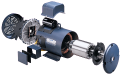
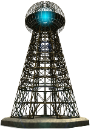
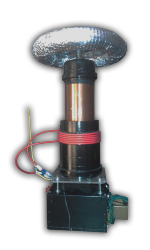
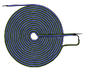
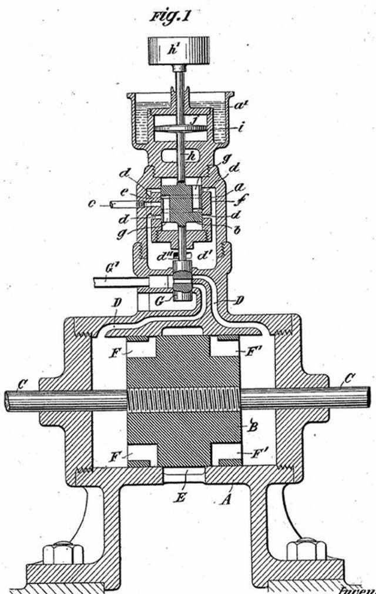
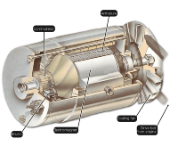
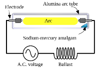
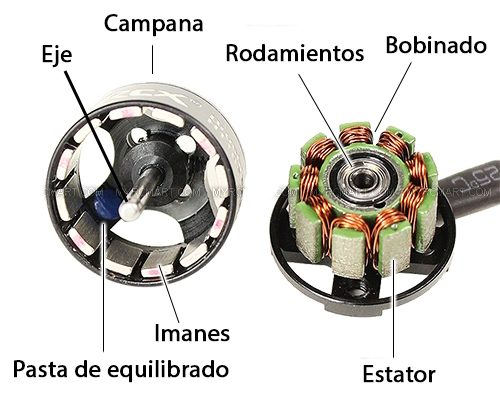
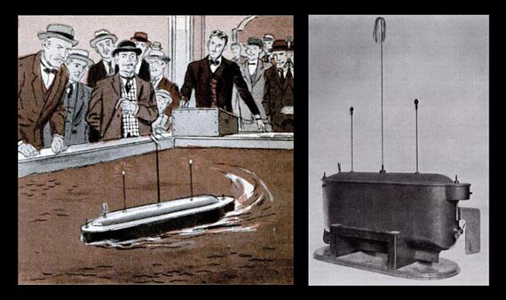

NIKOLA TESLA
BIOGRAFIA
Nikola Tesla nació el 10 de julio de 1856 en Smiljan, un pueblo en la región de Lika, en la actual Croacia, que en aquel momento formaba parte del Imperio Austrohúngaro. Fue el cuarto de cinco hijos de un sacerdote ortodoxo serbio y una madre croata.
Desde muy joven, Tesla mostró un gran interés en la electricidad y los inventos, y en 1875, comenzó a estudiar ingeniería eléctrica en la Escuela Politécnica de Praga. Después de graduarse, trabajó en una empresa de telégrafos en Budapest antes de trasladarse a París para trabajar en la Continental Edison Company.
En 1884, Tesla emigró a los Estados Unidos, donde comenzó a trabajar para Thomas Edison en la empresa Edison Machine Works en Nueva York. Allí, Tesla trabajó en la mejora del sistema de corriente continua de Edison, pero se enfrentó a desacuerdos con su jefe y decidió dejar la empresa para fundar su propia compañía.
En 1887, Tesla patentó su motor de corriente alterna, que era más eficiente y práctico que el sistema de corriente continua de Edison. Sin embargo, su rivalidad con Edison continuó y se convirtió en una "guerra de corrientes" pública, en la que Tesla y George Westinghouse promovieron el sistema de corriente alterna mientras que Edison defendió el sistema de corriente continua.
En la década de 1890, Tesla se centró en el desarrollo de su sistema de energía inalámbrica, que utilizaba la ionosfera para transmitir electricidad de manera inalámbrica. Esta invención fue la base de la tecnología de radio y televisión moderna, y Tesla también trabajó en la creación de un dispositivo para transmitir mensajes a través del océano Atlántico.
A lo largo de su carrera, Tesla patentó cientos de invenciones y realizó importantes contribuciones en campos como la física, la electricidad, la electromagnetismo y la robótica. También trabajó en la creación de armas de defensa y en la investigación de energía cósmica.
A pesar de su legado impresionante, Tesla murió en relativa oscuridad y pobreza en Nueva York el 7 de enero de 1943, a los 86 años. Sin embargo, su trabajo sigue siendo una inspiración para muchos científicos y tecnólogos en todo el mundo.
INVENCIONES
Motor de corriente alterna
Tesla es famoso por su invención del motor de corriente alterna, que fue más eficiente y práctico que el sistema de corriente continua de Edison. El motor de corriente alterna permitió la distribución de electricidad a larga distancia y se convirtió en la base de la red eléctrica moderna.
Sistema de energía inalámbrica
Tesla trabajó en la creación de un sistema de energía inalámbrica, que utilizaba la ionosfera para transmitir electricidad de manera inalámbrica. Esta invención sentó las bases para la tecnología de radio y televisión moderna.
tesla coil
El Tesla Coil es un transformador resonante que produce voltajes muy altos y corrientes de alta frecuencia. Se utiliza para generar energía eléctrica de alta tensión y se ha utilizado en diversas aplicaciones, como la investigación científica, la comunicación inalámbrica y los espectáculos de entretenimiento
Bobina de Tesla bifilar
La Bobina de Tesla bifilar es una variación de la Bobina de Tesla que utiliza dos hilos conductores en lugar de uno. Esta invención permitió a Tesla crear un campo magnético más poderoso y producir descargas eléctricas más grandes y espectaculares.
Máquina de terremotos
Tesla trabajó en la creación de una máquina que podía generar terremotos a distancia. Aunque nunca logró crear esta máquina, sus investigaciones sentaron las bases para el estudio de las ondas sísmicas y la predicción de terremotos.
tesla coil
Tesla también inventó el primer generador de corriente alterna de la historia. Este generador utilizaba un campo magnético rotativo para producir corriente eléctrica de manera más eficiente que los generadores de corriente continua de la época.
Lámpara de descarga de gas
Tesla también fue el inventor de la lámpara de descarga de gas, que utiliza gases ionizados para producir luz. Esta invención fue precursora de las lámparas fluorescentes y las luces de neón modernas.
Motor sin escobillas
Tesla desarrolló un motor sin escobillas, que utilizaba campos magnéticos rotativos para generar movimiento. Este motor es utilizado hoy en día en una variedad de dispositivos, desde herramientas eléctricas hasta vehículos eléctricos.
control remoto
En 1898, Tesla demostró un barco teledirigido en el Madison Square Garden en Nueva York, utilizando un control remoto que operaba con ondas de radio. Este fue uno de los primeros usos de la tecnología de control remoto, y sentó las bases para la tecnología de control remoto inalámbrico que utilizamos hoy en día.
CITAS
"Si quieres encontrar los secretos del universo, piensa en términos de energía, frecuencia y vibración."
"La invención es la cosa más importante del mundo. Su propósito es mejorar la vida de las personas."
"No creo que haya ningún campo de estudio más satisfactorio o más útil que la ciencia. Es un intento noble de comprender el universo que nos rodea."
"La ciencia no es más que una percepción más refinada del mundo. La sabiduría es la percepción más refinada de la humanidad."
"El genio se compone de un 2% de talento y un 98% de perseverancia."
"La felicidad es la clave del éxito. Si amas lo que estás haciendo, serás exitoso."
"La mente es todo. Si no crees que puedes hacer algo, entonces no podrás hacerlo. Si crees que puedes hacer algo, lo harás."
LEGADO
El legado de Nikola Tesla es incalculable y abarca una amplia gama de campos, desde la física y la ingeniería hasta la tecnología inalámbrica y la electrónica. Su trabajo ha sido fundamental para la creación de la industria eléctrica moderna, y sus invenciones han tenido un impacto significativo en la tecnología del siglo XX y XXI. Tesla fue un visionario que tuvo una perspectiva única sobre el mundo, y que dedicó su vida a explorar las fronteras de la ciencia y la tecnología. Su enfoque en la energía inalámbrica, la corriente alterna y el electromagnetismo allanó el camino para muchas de las tecnologías que usamos hoy en día, como la radio, la televisión, los teléfonos móviles y los sistemas de comunicación satelital. El legado de Tesla también ha influido en muchos otros campos, incluyendo la física teórica, la tecnología de la información y la inteligencia artificial. Su creatividad e innovación continúan inspirando a científicos, inventores y emprendedores de todo el mundo, y su nombre sigue siendo sinónimo de genialidad, visión y perseverancia. En resumen, el legado de Nikola Tesla es una celebración del espíritu humano de la exploración, la creatividad y la innovación. Su trabajo ha sido fundamental para dar forma al mundo moderno, y su influencia sigue siendo evidente en muchos aspectos de la vida cotidiana.